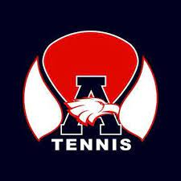
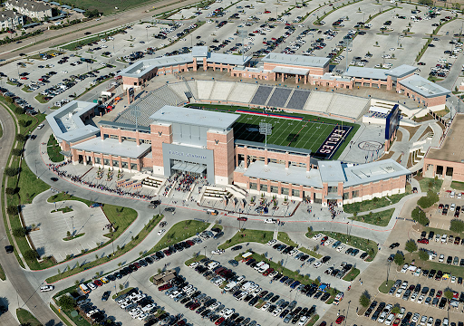

My Digital PortfolioI'm Oliver!Being a student in Allen for my entire life, I plan to graduate from Allen High School. I am currently a senior and an Athlete attending Allen High School in Texas. I am taking many high level AP classes and also starting in the varsity tennis lineup. Tennis has been one of my main passions for the last 7 years, eating up almost all of my time, but providing me with plenty of enjoyment and competitiveness. My passions stem from competitiveness, constantly striving to be a better version of myself, whether it be on the tennis court or in the classroom or even in a videogame. Some of my hobbies include playing tennis and playing videogames, always finding a way to scratch at my competitive itch. Over the past 3 years of my high school career I have accomplished a lot, completing many projects, for example in Computer Science, working on a Model Scheduling App for my high school scheduler, and creating an island survival game with two of my friends that we like to call "Greed Island." Being that I am a senior, I am also applying for colleges. So far, I have applied to Texas A&M University, and I am working on applications for other schools, some examples being the UT Austin, UT Dallas, Baylor, TCU, University of Arkansas, etc... What really drew my attention to these schools was the engineering program because I am planning on majoring in either computer science or in electrical engineering and ultimately continuing on that path in my career after college. Github! |

 |